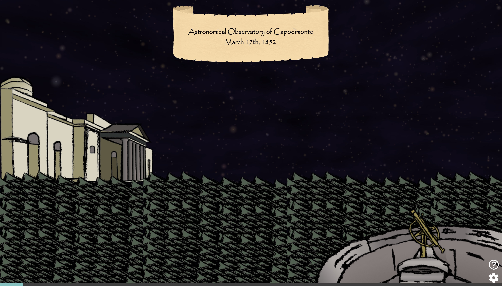

Psyche Lore and Mythology AR Experience
Understand how the
Psyche asteroid was
discovered. Find out
who discovered it.
Learn about the
lore and mythology
behind the name Psyche.
Clicking the Launch AR Experience button will start an interactive
experience that will explore the lore and mythology behind the
asteroid and the name Psyche.
Explore the astronomy tools used.
Learn about the astronomer.
Find Psyche in the night sky.

Watch the spacecraft launch.
Learn about the
lore and mythology behind
the asteroid name.
Watch to discover the
origins behind the asteroid.